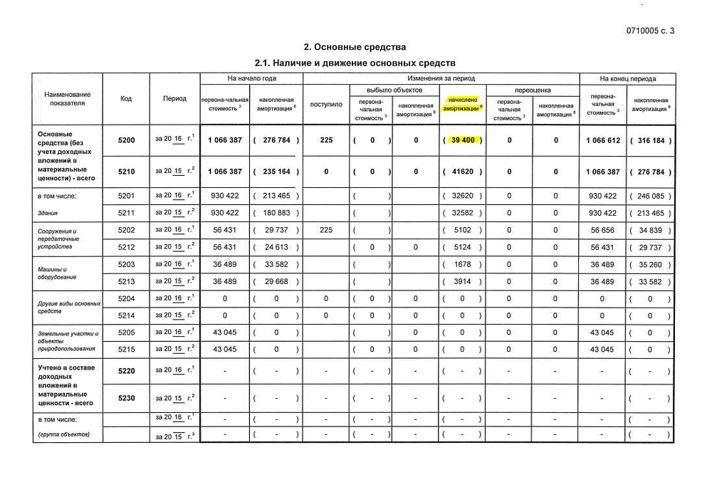

Оцениваем финансовое состояние компании по открытым источникам
Начинающие инвесторы допускают две ошибки: покупают на эмоциях и продают на эмоциях.
О продаже еще поговорим, а сейчас давайте о покупке.
Мы уже разобрали, что такое разумное инвестирование на примере твиттера и шаурмы. Мы говорили, что выбирать акции следует не по бренду, а по экономике: справедливо ли оценена компания и насколько она здорова как бизнес. Для этого наши предки изобрели мультипликаторы — производные значения, по которым легко сравнивать разные компании и делать выводы.
Мы разбирали первый простой мультипликатор P/E — цена компании, деленная на прибыль. Если компания стоит миллион, а зарабатывает 100 тысяч прибыли в год, то она, условно говоря, окупается за 10 лет, то есть мультипликатор P/E равен 10. Если аналогичная компания стоит миллион, а зарабатывает 250 тысяч прибыли, то она окупается за 4 года — P/E равен 4 и это вроде как лучше.
Данные о прибыли и стоимости берутся из открытых документов. На этот раз попробуем их почитать и применить полученные знания на практике.
Если вы завтра откроете собственную компанию, то единственный человек, которому вы должны сообщать о своих прибылях и убытках, — это ваш налоговый инспектор. Всем остальным о ваших финансах можно не говорить. Ваши клиенты, поставщики и сотрудники не могут заставить вас отчитаться о финансовых результатах. Если вы частная компания, ваши финансы — ваше дело.
Если вы захотите привлечь в компанию инвестора, то он захочет знать, во что он вкладывает. Тогда вам придется раскрыть ему финансовую информацию, но в частном порядке.
А если вы захотите продавать свои акции на бирже, то есть привлекать в компанию много маленьких частных инвесторов, то вам придется рассказывать о своих финансах всему миру. Ведь теперь любой человек сможет стать вашим инвестором, и каждому по секрету сообщать ваши финансовые данные вы не сможете. Вы станете публичной компанией.
Слово «публичный» означает (среди прочего), что компания должна рассказывать всем о своих финансовых делах, даже если эти дела плохи. Этим мы и воспользуемся.
Публичные компании несколько раз в год публикуют у себя на сайте большой финансовый отчет. Он легко может содержать более 100 страниц, а стандарты отчетности бывают разные, но суть одинаковая. Компания говорит: «Вот наши финансовые результаты, мы за них отвечаем». Инвесторы читают, и каждый сам для себя решает, хочет он дальше вкладывать в компанию или нет.
В отчетах бывает сложно разобраться на первый взгляд. Но в реальности чаще всего нам понадобятся только две формы: баланс и финансовые результаты. Суммарно из них нужно будет достать 10—15 чисел.
Чаще всего российскому инвестору придется работать с одним из трех форматов отчетности:
МСФО (Международные стандарты финансовой отчетности) — лучший формат для инвестора. Если он есть, сразу открываем его. Если нет — ищем другие.
РСБУ — российский стандарт бухгалтерского учета (на самом деле скорее налогового). Не очень удобный, но нужные данные там есть.
US GAAP (общепринятые принципы бухгалтерского учета) — по сути, РСБУ, но для американских компаний.
Примечательно, что международный формат отчетности отвечает на вопрос «Как дела у компании?», а российский — «А правильно ли ты, дружок, платишь налоги?»
Чтобы попрактиковаться, сделаем упражнение. Возьмем три компании из ретейла: «Магнит», «Ленту» и «Волмарт». У «Магнита» возьмем отчетность по РСБУ, у «Ленты» — МСФО, а у «Волмарта» — GAAP. И надергаем данных из всех этих отчетов, а потом посмотрим на результат.
Вот таблица, которую мы будем заполнять:
Финансовые результаты и баланс за 2016 год
| «Магнит», РСБУ | «Лента», МСФО | «Волмарт», US GAAP | |
|---|---|---|---|
| Отчет о балансе | ________ | ________ | ________ |
| Итого активы | ________ | ________ | ________ |
| Денежные средства и эквиваленты | ________ | ________ | ________ |
| Итого обязательства | ________ | ________ | ________ |
| Итого капитал | ________ | ________ | ________ |
| Отчет о финансовых результатах | ________ | ________ | ________ |
| Выручка | ________ | ________ | ________ |
| Чистая прибыль | ________ | ________ | ________ |
| Прибыль до налогов | ________ | ________ | ________ |
| Проценты уплаченные | ________ | ________ | ________ |
| Проценты полученные | ________ | ________ | ________ |
| Дополнительно | ________ | ________ | ________ |
| Амортизация | ________ | ________ | ________ |
Откуда мы знаем, какие данные нужно заполнять? Наша цель — рассчитать мультипликаторы, поэтому мы будем собирать те данные, которые нужны под них. Пока что не будем вдаваться в сами эти мультипликаторы, а просто их наберем.
Дальше будет длинная простыня с выдержками из отчетности — не пугайтесь. Я выделю, на что нужно смотреть в каждой форме. Начнем с «Магнита» — МСФО.
В скобках в финансовой отчетности указывают расход компании. В наших таблицах мы тоже взяли эти суммы в скобки.
Чтобы было наглядно:
Страница 1 отчета «Магнита» по РСБУ.
Страница 2 отчета «Магнита» по РСБУ
Страница 3 отчета «Магнита» по РСБУ
Значение амортизации для РСБУ не предусмотрено в основном отчете, поэтому придется посмотреть в пояснительной записке. Откроем файл пояснений к отчетности:
Страница 3 пояснительной записки к отчету «Магнита» по РСБУ
За 10 минут мы заполнили первый столбец. Обратите внимание, что все значения в таблице — в миллионах рублей.
Финансовые результаты и баланс за 2016 год
| «Магнит», РСБУ (млн рублей) | «Лента», МСФО (млн рублей) | «Волмарт», US GAAP (млн долларов) | |
|---|---|---|---|
| Отчет о балансе | |||
| Итого активы | 126 227 | ________ | ________ |
| Денежные средства и эквиваленты | 0,3 | ________ | ________ |
| Итого обязательства | 62 995 | ________ | ________ |
| Итого капитал | 63 231 | ________ | ________ |
| Отчет о финансовых результатах | |||
| Выручка | 371 | ________ | ________ |
| Чистая прибыль | 29 785 | ________ | ________ |
| Прибыль до налогов | 31 239 | ________ | ________ |
| Проценты уплаченные | (5846) | ________ | ________ |
| Проценты полученные | 13 140 | ________ | ________ |
| Дополнительно | |||
| Амортизация | 39 | ________ | ________ |
Теперь то же самое проделаем для МСФО-отчетности «Ленты»:
Здесь кому-то может стать сложнее, так как отчетность на английском языке.
Страница 8 отчета «Ленты» по МСФО
Страница 9 отчета «Ленты» по МСФО
Страница 10 отчета «Ленты» по МСФО
Заполняем второй столбец таблицы.
Финансовые результаты и баланс за 2016 год
| «Магнит», РСБУ (млн рублей) | «Лента», МСФО (млн рублей) | «Волмарт», US GAAP (млн долларов) | |
|---|---|---|---|
| Отчет о балансе | |||
| Итого активы | 126 227 | 226 170 | ________ |
| Денежные средства и эквиваленты | 0,3 | 13 038 | ________ |
| Итого обязательства | 62 995 | 167 801 | ________ |
| Итого капитал | 63 231 | 58 369 | ________ |
| Отчет о финансовых результатах | |||
| Выручка | 371 | 306 352 | ________ |
| Чистая прибыль | 29 785 | 11 202 | ________ |
| Прибыль до налогов | 31 239 | 14 553 | ________ |
| Проценты уплаченные | (5846) | (10 085) | ________ |
| Проценты полученные | 13 140 | 852 | ________ |
| Дополнительно | |||
| Амортизация | 39 | 7695 | ________ |
Теперь пойдем на сайт «Волмарта» и возьмем их американский отчет. У «Волмарта» финансовый год кончается 31 января, то есть, чтобы получить данные за 2016 год, нужно фактически скачивать данные за 2017:
Данные о балансе — это активы.
Страница 36 отчета «Волмарта»
Страница 38 отчета «Волмарта»
Страница 40 отчета «Волмарта»
Заполняем оставшийся столбец в таблице.
Финансовые результаты и баланс за 2016 год
| «Магнит», РСБУ (млн рублей) | «Лента», МСФО (млн рублей) | «Волмарт», US GAAP (млн долларов) | |
|---|---|---|---|
| Отчет о балансе | |||
| Итого активы | 126 227 | 226 170 | 198 825 |
| Денежные средства и эквиваленты | 0,3 | 13 038 | 6867 |
| Итого обязательства | 62 995 | 167 801 | 118 290 |
| Итого капитал | 63 231 | 58 369 | 80 535 |
| Отчет о финансовых результатах | |||
| Выручка | 371 | 306 352 | 485 873 |
| Чистая прибыль | 29 785 | 11 202 | 13 643 |
| Прибыль до налогов | 31 239 | 14 553 | 20 497 |
| Проценты уплаченные | (5846) | (10 085) | (100) |
| Проценты полученные | 13 140 | 852 | 2367 |
| Дополнительно | |||
| Амортизация | 39 | 7695 | 10 080 |
Пояснения для педантов
Выбранные нами данные не всегда присутствуют во всех типах отчетностей. Например, в МСФО-отчете вместо уплаченных и полученных процентов часто указывают финансовые доходы и расходы. При этом в US GAAP такой информации и вовсе может не быть. Как повлияют такие изменения и можно ли ими пренебречь?
Пренебречь можно. Часто так делать и приходится. Это может повлиять на точность полученных мультипликаторов. Мы можем позволить себе такие неточности в отношении второстепенных чисел — процентов или финансовых доходов. Их значения обычно на порядок меньше, чем у ключевых показателей, — значит, они меньше влияют на результат.
Но всё равно чем качественнее данные, тем качественнее анализ. Лучше собрать все точные данные, какие возможно.
Мы собрали все данные из финансовых отчетов. Но как мы помним, мультипликаторы отражают соотношение между финансами и ценой. А значит, данные нужно дополнить рыночной капитализацией выбранных компаний.
Данные о капитализации «Магнита» возьмем с сайта Московской биржи. Данные по «Ленте» и «Волмарту» — с сайта «Блумберг».
Добавим данные о капитализации в последнюю строку таблицы. Приведем их к миллионам рублей или долларов.
Финансовые результаты и баланс за 2016 год
| «Магнит», РСБУ (млн рублей) | «Лента», МСФО (млн рублей) | «Волмарт», US GAAP (млн долларов) | |
|---|---|---|---|
| Отчет о балансе | |||
| Итого активы | 126 227 | 226 170 | 198 825 |
| Денежные средства и эквиваленты | 0,3 | 13 038 | 6867 |
| Итого обязательства | 62 995 | 167 801 | 118 290 |
| Итого капитал | 63 231 | 58 369 | 80 535 |
| Отчет о финансовых результатах | |||
| Выручка | 371 | 306 352 | 485 873 |
| Чистая прибыль | 29 785 | 11 202 | 13 643 |
| Прибыль до налогов | 31 239 | 14 553 | 20 497 |
| Проценты уплаченные | (5846) | (10 085) | (100) |
| Проценты полученные | 13 140 | 852 | 2367 |
| Дополнительно | |||
| Амортизация | 39 | 7695 | 10 080 |
| Рыночная капитализация на 29.05.2017 | 839 232 | 167 875 | 240 014 |
Теперь все данные в сборе и можно рассчитать мультипликаторы. Вот что мы считаем.
P/E — отношение рыночной капитализации к прибыли. Другими словами, количество лет, за которое компания окупится при покупке. Формула расчета: капитализация / прибыль.
P/BV — отношение рыночной капитализации к пассиву, где пассив равен разнице между всеми активами и всеми долгами. Формула расчета: капитализация / пассив.
P/S — отношение рыночной капитализации к выручке. Формула расчета: капитализация / выручка.
EV — справедливая стоимость компании с учетом ее долгов и денежных средств. Формула расчета: капитализация + долги − денежные средства.
EBITDA — доходы до налогообложения и амортизации. Отвечает на вопрос, сколько компания генерирует прибыли в своей повседневной работе, то есть насколько она операционно эффективна. Формула расчета: прибыль до налогов + амортизация + процентный расход − процентный доход.
EV/EBITDA — аналог P/E, однако отражает более объективную картину. Формула расчета: EV / EBITDA.
Долг/EBITDA — отражает количество лет, необходимое компании, чтобы погасить весь свой долг. Формула расчета: общий долг / EBITDA.
ROE — доходность акционерного капитала в процентах годовых, то есть рентабельность. Считается в процентах. Прибыль компании делим на ее собственные активы и умножаем на 100%.
Чтобы посмотреть, как мы считали мультипликаторы, скачайте наш расчет.
Мультипликаторы по итогам 2016 года
| «Магнит», РСБУ (млн рублей) | «Лента», МСФО (млн рублей) | «Волмарт», US GAAP (млн долларов) | |||
|---|---|---|---|---|---|
| Отчет о балансе | |||||
| 1 | Итого активы | 126 227 | 226 170 | 198 825 | |
| 2 | Денежные средства и эквиваленты | 0,3 | 13 038 | 6867 | |
| 3 | Итого обязательства | 62 995 | 167 801 | 118 290 | |
| 4 | Итого капитал | 63 231 | 58 369 | 80 535 | |
| Отчет о финансовых результатах | |||||
| 5 | Выручка | 371 | 306 352 | 485 873 | |
| 6 | Чистая прибыль | 29 785 | 11 202 | 13 643 | |
| 7 | Прибыль до налогов | 31 239 | 14 553 | 20 497 | |
| 8 | Проценты уплаченные | (5846) | (10 085) | (100) | |
| 9 | Проценты полученные | 13 140 | 852 | 2367 | |
| Дополнительно | |||||
| 10 | Амортизация | 39 | 7695 | 10 080 | |
| 11 | Рыночная капитализация на 29.05.2017 | 839 232 | 167 875 | 240 014 | |
| Мультипликаторы | |||||
| 12 | P/E | 28,18 | 14,99 | 17,59 | 11/6 |
| 13 | P/BV | 13,27 | 2,88 | 2,98 | 11/4 |
| 14 | P/S | 2262,08 | 0,55 | 0,49 | 11/5 |
| 15 | EV | 902226,70 | 322638,00 | 351437,00 | 11+3-2 |
| 16 | EV/S | 2431,88 | 1,05 | 0,72 | 15/5 |
| 17 | EBITDA | 23984,00 | 31481,00 | 28310,00 | 7+10-9+8 |
| 18 | EV/EBITDA | 37,62 | 10,25 | 12,37 | 15/17 |
| 19 | Долг/EBITDA | 2,63 | 5,33 | 4,16 | 3/17 |
| 20 | ROE | 47,11% | 19,19% | 16,94% | 6/4 |
Вот и всё, наша работа закончена. И нам даже не пришлось конвертировать доллары «Волмарта» в рубли, потому что производные мультипликаторы не имеют единиц измерения. Мы просто собрали данные и рассчитали мультипликаторы по выбранным компаниям.
Вот что мы сразу видим из наших таблиц:
Посмотрим еще раз на отчет «Магнита» о прибыли.
Страница 3 РСБУ-отчета «Магнита»
В начале мы видим выручку всего 370 млн рублей, а в конце прибыль почти 30 млрд рублей. Эта прибыль взялась не из пустоты. Добавились проценты к получению — 13 млрд рублей. Они никак не относятся к основной деятельности, но влияют на прибыль. Поэтому часто бывает так, что прибыль больше выручки, хотя выглядит это странно. Зная специфику бизнеса «Магнита», мы прекрасно понимаем, что его выручка должна быть намного больше прибыли.
Всё дело в том, что «Магнит» — это не просто одна публичная компания, а группа компаний. И каждая компания в этом холдинге может иметь собственный вид деятельности. В РСБУ-отчете мы увидим выручку непосредственно по той деятельности компании, которую рассматриваем. В нашем случае это «Аренда и управление недвижимым имуществом». Об этом же говорит показатель в графе «Доходы от участия в других организациях» — 24 млрд рублей. Кто принес эту прибыль? Как раз другие компании холдинга.
Теперь посмотрим, как эта проблема решается в МСФО-отчетности.
Скачиваем с сайта того же «Магнита» МСФО-отчет и открываем первую страницу:
Переходим на страницу 9 и видим вот что:
Это полный список компаний, входящих в группу «Магнит». Среди них есть, например, «Тандер», основная деятельность которого — это розничная торговля. Все они и принесли ту скрытую прибыль и выручку, которую мы видим в РСБУ-отчете.
МСФО-отчет же предоставляет нам уже консолидированные данные. Здесь, к примеру, выручка группы компаний «Магнит» составляет уже более 1 трлн рублей.
Это очень хороший пример, чтобы понять разницу между РСБУ и МСФО.
К сожалению, даже такого анализа еще не достаточно, чтобы принять правильное инвестиционное решение. Что делать с этими данными дальше — расскажем в будущих статьях.